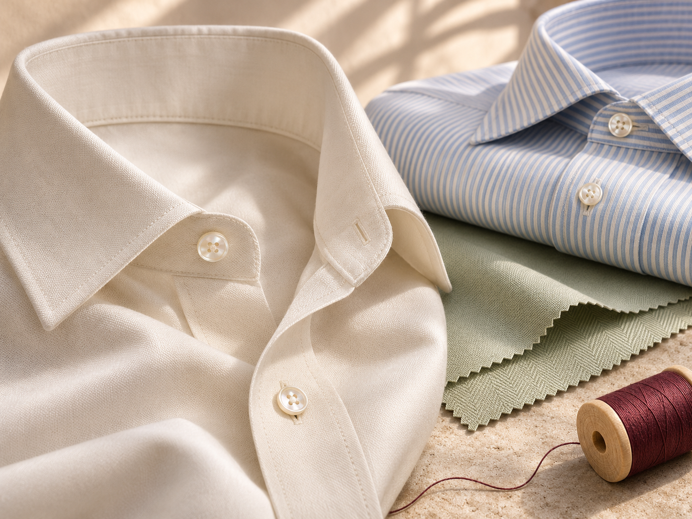
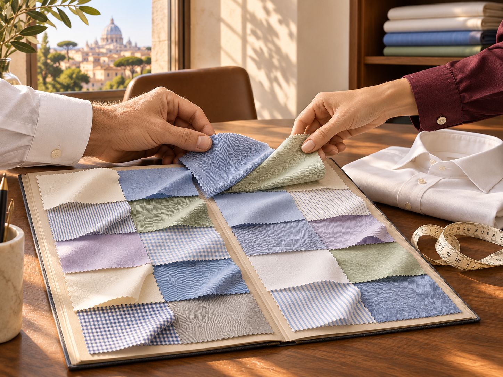
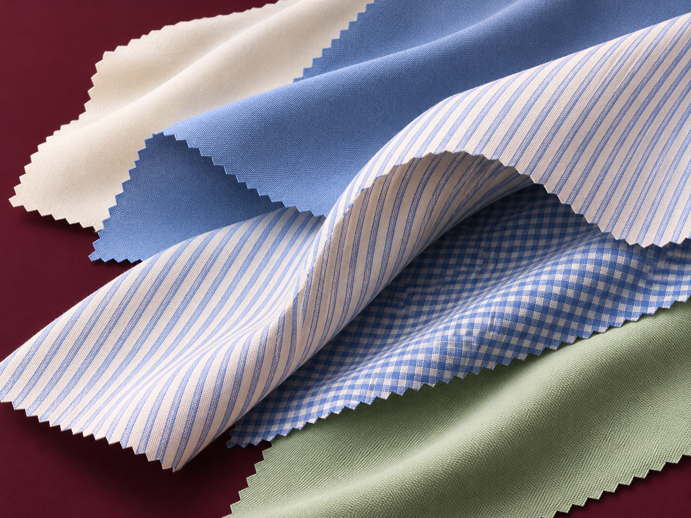

Cotton LeafRoma · Camiceria su misura
Camicie per uomo e donna
A partire da 55 €
Su misura. Anche a domicilio, a Roma.
La tua camicia.
Comincia da qui.
Scegli i tessuti e lasciati prendere le misure.
In negozio, a casa, in ufficio o in hotel.

Visita a domicilio gratuita a Roma · Su appuntamento
Scopri il servizio e prenota dal sito
cottonleaf.itInquadra il QR con la fotocamera.
Sul sito puoi contattarci e prenotare.
+39 345 235 7524INQUADRA · APRI IL SITO
Cotton LeafRoma · Camiceria su misura
A casa · In ufficio
In hotel
La tua camiceria a Roma, anche online
Ci trovi online.
Veniamo da te.
Portiamo il campionario e prendiamo le tue misure.
Camicie per uomo e donna a partire da 55 €.

A Roma, la visita a domicilio è gratuita
Il prossimo appuntamento parte da qui
cottonleaf.itApri il sito e contattaci per concordare
luogo e orario della tua visita.
+39 345 235 7524INQUADRA · APRI IL SITO
Cotton LeafRoma · Camiceria su misura
Camicie per uomo e donna
A partire da 55 €
Scegli il luogo. Al resto pensiamo noi.
Il tuo stile.
Al tuo indirizzo.
Tessuti da scegliere, misure da prendere, tempo per te.
A casa, in ufficio o in hotel. Sempre a Roma.

Presa misure e scelta tessuti · Visita gratuita a Roma
Scopri il su misura Cotton Leaf
cottonleaf.itInquadra il QR, visita il sito
e prenota il tuo appuntamento.
+39 345 235 7524INQUADRA · APRI IL SITO